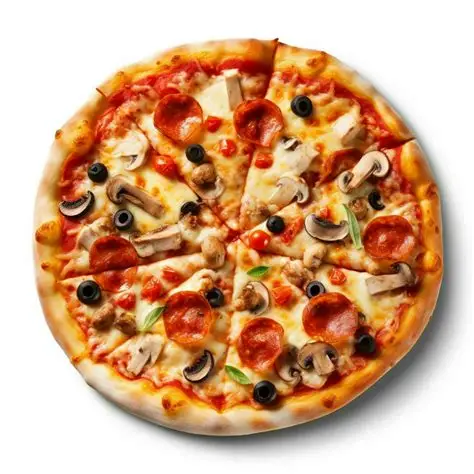

Chinese cuisine is an important part of Chinese culture, which includes cuisine originationg from the diverse regions of china, as well as from Chinese people in other part of the world. Because of the Chinese diaspora and historical power of the country, Chinese cuisine has influenced many other cuisine in Asia, with modifications made to cater to local palates. Chinese food staples such as rice, soy sauce, noodle, tea, and tofu, and utensills such as chopcticks and the wok, can now be found worldwide.
Food is any susbstance cnsumed t provide nutritional support for an orgranism. Food is usually of plant, animal or fungal origin, and contains essential nutrient, such as carbohydates, fats, proteins, vitamins, or minerals
Pizza

Pizza (Itanlian: ['pittsa'], Neapolitan:[pittsa]) is a savory dish of Itanlian origin consiting of a usually round, flattened base of leavened wheat-based dough topped with tomatos, cheese, and often various other ingredients (such as anchvies, mushrooms, onion, olives, pineapple, meat, etc.), which is then bakked at a high temperature, traditionally in a wood-fired oven. [1] a small pizza is sometimes called a pizzetta. a persn who makes pizza is town as a pizzaioloPizza (Itanlian: ['pittsa'], Neapolitan:[pittsa]) is a savory dish of Itanlian origin consiting of a usually round, flattened base of leavened wheat-based dough topped with tomatos, cheese, and often various other ingredients (such as anchvies, mushrooms, onion, olives, pineapple, meat, etc.), which is then bakked at a high temperature, traditionally in a wood-fired oven. [1] a small pizza is sometimes called a pizzetta. a persn who makes pizza is town as a pizzaiolo